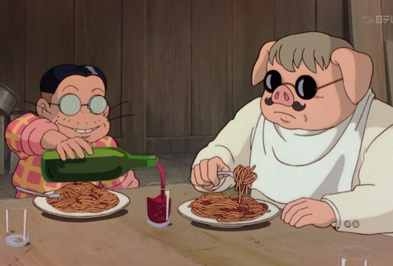

Piccolo's Pasta

Description
This is the very same pasta that Mr. Piccolo served Porco Rosso in the Studio Ghibli film Porco Rosso. With this recipe, now you can enjoy the same dish alongside the film's brave protagonist. After all, what's better than combining great food with a great movie? These are common ingredients that you should be able to find at just about any supermarket, and it's a fairly simple dish to throw together without requiring too much effort.
Ingredients
- 1 tbsp olive oil
- One 24 oz can of crushed San Marzano tomatoes
- 1/2 large white onion, minced
- 2-3 garlic cloves, minced
- Salt and pepper to taste
- 1/2 tbsp oregano
- 1/2 tbsp dried parsley
- 1/4 cup fresh basil leaves
- Dash of sugar
- Box of spaghetti
Steps
- Prepare your ingredients
- Heat your oil over medium heat. Once shimmering, add the onions and saute until transluscent and aromatic; about 3-5 minutes.
- Once onions are transluscent, add garlic and saute until fragrant; about 30-60 seconds.
- Turn heat to medium-low and add crushed tomatoes, herbs, spices, dash of sugar, and salt & pepper. Bring to a simmer and hold for at least 10 minutes and up to 4 hours.
- Meanwhile, boil a pot of water and add spaghetti, cooking according to package directions.
- Drain spaghetti, then add to a separate pan with sauce and toss to combine.
- Enjoy!